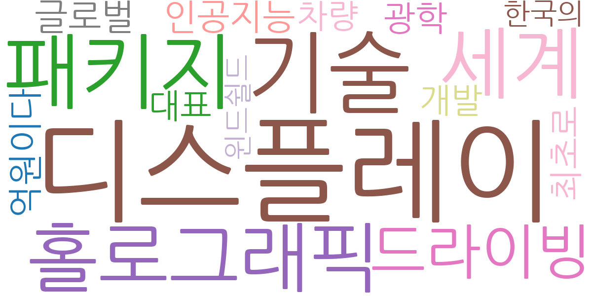
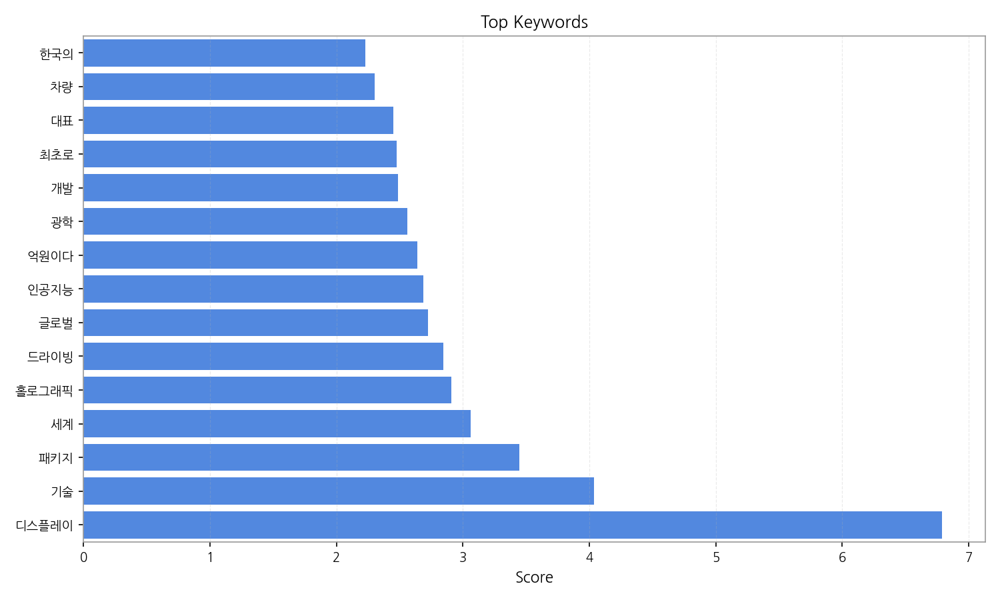
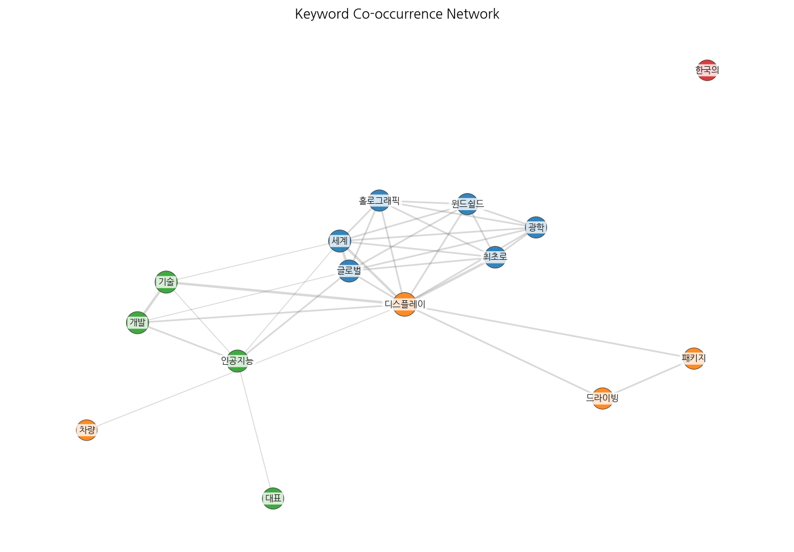
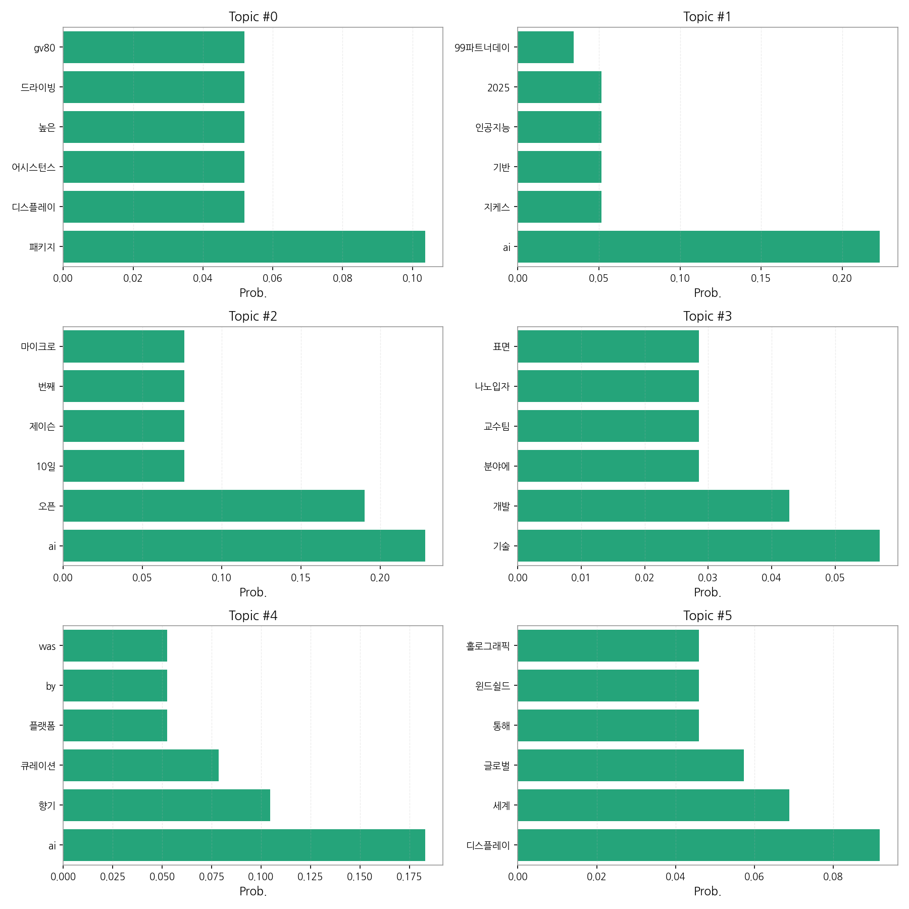
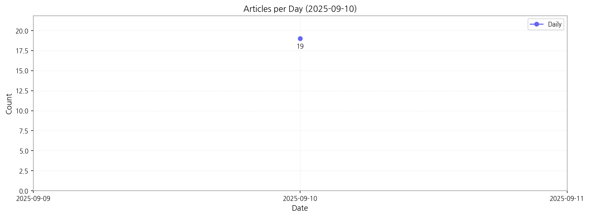

제공된 데이터를 바탕으로 한국어 뉴스 기사의 핵심 맥락을 다음과 같이 정리했습니다.
핵심 맥락: 데이터는 주로 자동차 기술(고급 패키지, 디스플레이, 자율주행), AI 기술(다양한 AI 응용, 특히 오픈AI 관련 뉴스), 그리고 디스플레이 기술 발전(홀로그래픽 윈드쉴드 등)에 집중되어 있습니다. AI는 자동차 기술과 향기 큐레이션 플랫폼 등 다양한 분야에 적용되고 있으며, 나노입자 기술 개발 등의 기초 과학 연구도 일부 다루고 있습니다. 전반적으로 기술 발전과 관련된 뉴스가 주를 이루고 있습니다.
최근 변화/스파이크: 2025년 9월 10일에 19건의 기사가 집중적으로 발생했습니다. 이는 특정 기술 발표나 이벤트, 혹은 특정 기업의 뉴스 발표와 관련이 있을 가능성이 높습니다. 이 시점을 중심으로 기사의 주제와 빈도를 분석하여 원인을 파악하는 것이 중요합니다.
실무 인사이트:
핵심 키워드 모니터링 강화: "AI", "디스플레이", "자율주행", "나노입자" 등 핵심 키워드를 중심으로 뉴스 모니터링 시스템을 구축하고, 키워드 출현 빈도 및 연관 키워드 분석을 통해 시장 트렌드를 실시간으로 파악해야 합니다. 특히 2025년 9월 10일 집중 발생 원인 분석을 통해 예측 시스템 개선이 필요합니다.

| Rank | Keyword | Score |
|---|---|---|
| 1 | 디스플레이 | 6.789 |
| 2 | 기술 | 4.035 |
| 3 | 패키지 | 3.448 |
| 4 | 세계 | 3.059 |
| 5 | 홀로그래픽 | 2.909 |
| 6 | 드라이빙 | 2.848 |
| 7 | 글로벌 | 2.726 |
| 8 | 인공지능 | 2.687 |
| 9 | 억원이다 | 2.639 |
| 10 | 광학 | 2.562 |
| 11 | 개발 | 2.488 |
| 12 | 최초로 | 2.478 |
| 13 | 대표 | 2.451 |
| 14 | 차량 | 2.301 |
| 15 | 한국의 | 2.227 |




제공된 데이터를 바탕으로 한국어 뉴스 기사의 핵심 맥락을 다음과 같이 정리했습니다.
핵심 맥락: 데이터는 주로 자동차 기술(고급 패키지, 디스플레이, 자율주행), AI 기술(다양한 AI 응용, 특히 오픈AI 관련 뉴스), 그리고 디스플레이 기술 발전(홀로그래픽 윈드쉴드 등)에 집중되어 있습니다. AI는 자동차 기술과 향기 큐레이션 플랫폼 등 다양한 분야에 적용되고 있으며, 나노입자 기술 개발 등의 기초 과학 연구도 일부 다루고 있습니다. 전반적으로 기술 발전과 관련된 뉴스가 주를 이루고 있습니다.
최근 변화/스파이크: 2025년 9월 10일에 19건의 기사가 집중적으로 발생했습니다. 이는 특정 기술 발표나 이벤트, 혹은 특정 기업의 뉴스 발표와 관련이 있을 가능성이 높습니다. 이 시점을 중심으로 기사의 주제와 빈도를 분석하여 원인을 파악하는 것이 중요합니다.
실무 인사이트:
핵심 키워드 모니터링 강화: "AI", "디스플레이", "자율주행", "나노입자" 등 핵심 키워드를 중심으로 뉴스 모니터링 시스템을 구축하고, 키워드 출현 빈도 및 연관 키워드 분석을 통해 시장 트렌드를 실시간으로 파악해야 합니다. 특히 2025년 9월 10일 집중 발생 원인 분석을 통해 예측 시스템 개선이 필요합니다.
| Idea | Target | Value Prop | Score |
|---|---|---|---|
| AI 기반 자동차 패키지 맞춤형 추천 플랫폼 | 자동차 판매업체, 자동차 제조사, 자동차 관련 온라인 플랫폼 운영사 (중소기업 이상) | AI 기반의 개인 맞춤형 자동차 패키지 추천 시스템을 통해 소비자 만족도를 높이고 판매 효율을 증대시킵니다. 고객의 선호도, 라이프스타일, 예산 등을 분석하여 최적의 패키지를 추천하며, 판매자에게는 효율적인 판매 전략 수립을 지원합니다. | 4.50 |
| 홀로그래픽 윈드쉴드 기술 상용화 지원 플랫폼 | 홀로그래픽 윈드쉴드 기술 개발 기업, 자동차 부품 제조사, 자동차 제조사 (대기업) | 홀로그래픽 윈드쉴드 기술 상용화를 위한 기술 지원, 시장 분석, 사업화 전략 수립 등을 지원하는 플랫폼을 제공합니다. 기술 개발 기업과 자동차 제조사 간의 협력을 촉진하고, 기술 상용화의 리스크를 최소화합니다. | 4.00 |
| 자율주행 기술 개발 현황 분석 및 예측 플랫폼 | 자율주행 기술 개발 기업, 자동차 제조사, 투자사 (대기업) | 자율주행 기술 개발 현황을 종합적으로 분석하고, 미래 기술 동향을 예측하는 플랫폼을 제공합니다. 기업들은 이를 통해 기술 개발 전략을 효율적으로 수립하고, 시장 경쟁력을 강화할 수 있습니다. | 3.80 |
| AI 기반 향기 큐레이션 플랫폼 | 향수 제조업체, 향초 제조업체, 향기 관련 온라인 플랫폼 운영사 (중소기업) | AI 기반의 개인 맞춤형 향기 추천 시스템을 통해 소비자의 취향에 맞는 향기를 추천하고, 향기 제품 선택에 대한 정보를 제공합니다. 향기 관련 사업자에게는 새로운 고객 확보 및 매출 증대 기회를 제공합니다. | 3.50 |
| AI 기반 디스플레이 기술 트렌드 분석 및 예측 서비스 | 디스플레이 제조사, 디스플레이 관련 부품 제조사, IT 기업 (대기업) | AI 기반의 디스플레이 기술 트렌드 분석 및 예측 서비스를 통해 기업들이 미래 시장을 예측하고 기술 개발 전략을 효율적으로 수립할 수 있도록 지원합니다. 경쟁사 분석 및 시장 변화에 대한 신속한 대응을 가능하게 합니다. | 3.20 |